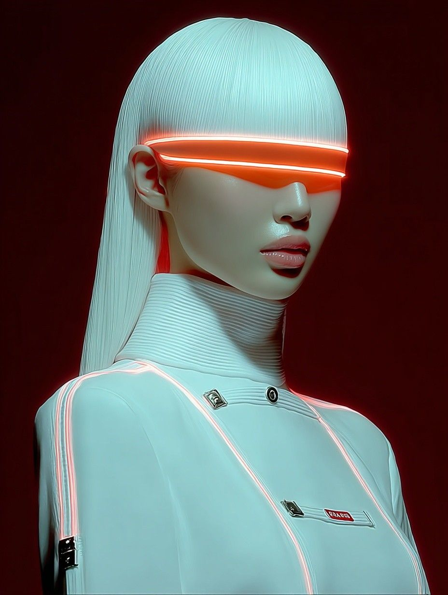

CSS Animations · Ambient & Feedback
Ambient backgrounds & feedback states.

J — Ambient backgrounds
14 continuous effects, plus beam-border, all on:load.
Gradient & color fields — 2
Border treatments — 4


Texture & scanlines — 1
Grid drift — 2
Floating & orbiting shapes — 4
Light & atmosphere — 3
K — Feedback & status
17 loading indicators and event-driven reactions. Trigger buttons are demo glue, not part of the library.
Loading indicators — 6
Loaded. This paragraph replaced the skeleton.
Toast — 2
Saved successfully.
Saved successfully.
Error & attention — 2
Click reactions — 6
click for ripple
3
128
♥
Copied!
Gesture-simulated — 1
pull down
Options — 2
E — SVG & icons
Draws — 3
Fills — 2
Icon toggles — 2
Logo build — 1
Loops — 3